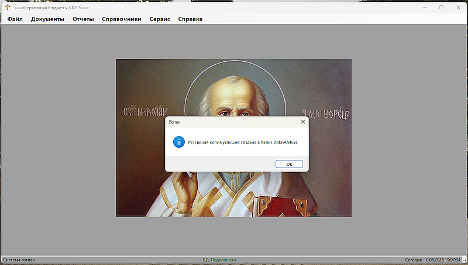
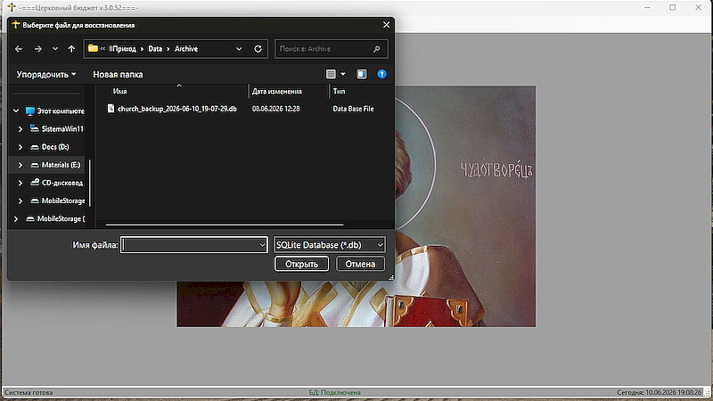
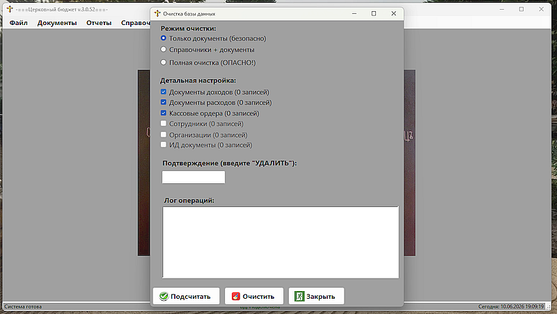
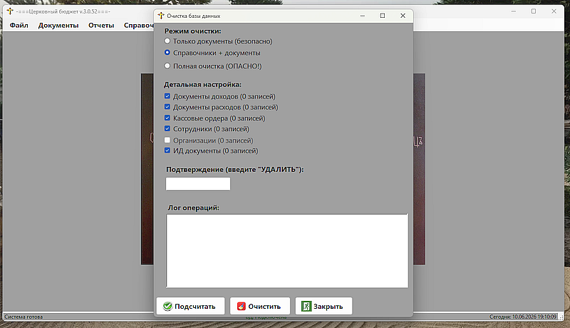
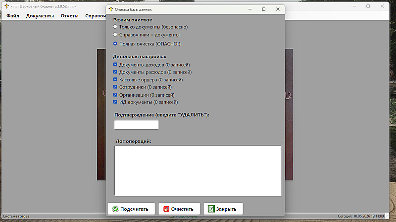

Сервисные функции |
|
Сервисные функцииПункт меню 'Сервис' содержит следующие функции: Архивирование БД - для сохранения резервной копии БД программы (сохраняются 10 последний копий). Актуально в случае каких-либо экспериментов с программой. В случае переноса на другой компьютер и т.п. ситуаций.  Рис. 1 - Архивирование БД. Восстановление из копии БД - для восстановления резервной копии БД программы сделанной ранее, либо при выходе программы (сохраняются 10 последний копий). Делать эту операцию нужно с осторожностью, так как может восстановиться более ранняя версия и последние данные будут утрачены, если перед этим не была создана резервная копия, или восстановлена намного более ранняя копия БД.  Рис. 2 - Востановление из копии БД Очистка БД (с параметрами) - для того, чтобы обнулить процесс создания документов или отчетов в программе (например для начала работы с другим приходом, передачи программы другому приходу и т.п.). Существкет три уровня очистки: начальный - очищаются только файлы и сведения о создании документов, продвинутый - очистка документов и некоторых справочников и полный - при котором остаются только константы и справочники категорий доходов / расходов - все остальное затирается. Выполнять следует с особой осторожностью.  Рис. 3 - Очистка БД (с параметрами). Тоько Документы.  Рис. 3 - Очистка БД (с параметрами). Справочники и Документы.  Рис. 3 - Очистка БД (с параметрами). Полная очистка | |
По вопросам: viruss954@gmail.com